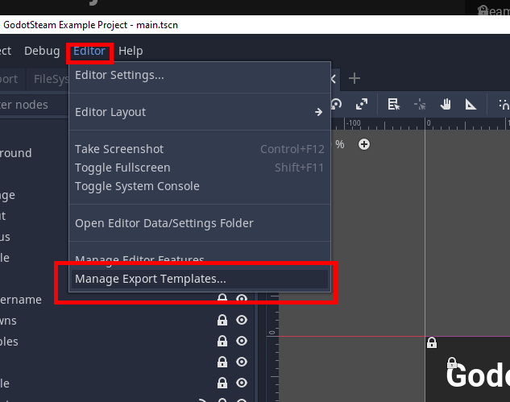

Exporting and Shipping
This topic comes up a lot and also trips folks up a lot; so this tutorial is here to help. Exporting and shipping your game with GodotSteam is pretty easy once you get the flow down. This tutorial assumes you are downloading pre-compiled versions of the GodotSteam templates instead of compiling them; however, it will obviously work the same with the ones you compile yourself.
Template Importing (Optional)
As the title mentions, this step is completely optional. Personally, I do not import template zips when exporting games; however, I figured it was worth covering for those of you who do. And for those who do, there is now a separate template zip available in the GodotSteam release section which has all the operating system templates in one package.
Just like installing the official template zips, you want to click on the "Editor" option at the top then select "Manage Export Templates..." in the drop-down. Like so:
 Manage Export Template" />
On the next screen you will want to click on the "Install From File" button and find your godotsteam-xxx-templates.tpz file. The editor will then install these templates so they will be available during export.

At the time of writing, I am not sure how the editor decides which templates to use if you have both the regular Godot templates and the custom GodotSteam templates installed. If anyone does, please feel free to reach out.
Exporting
From this point on, I will assume you have skipped the template installer process above. To being our export process, first click on the "Project" button in the top menu then select "Export..." from the drop-down.

Since the pre-compiles are never debug-release versions, you must make sure that only the release field contains a template and that the debug field is empty. this next step is important and also where people often get stuck:

If you have the debug field filled in, especially while using the pre-compiled templates, the export process will fail. Also, if you use a non-GodotSteam template here or leave the release field blank as well, you will end up with an executable that crashes like so:
Parse Error: The identifier "Steam" isn't declared in the current scope.
Obviously, because the Steamworks API isn't present without a GodotSteam template, the executable will not understand any Steam functions. Also take note that the OSX export screen has a reversed order for the debug and release fields, for some reason:

On the last export screen, just before the process begins, make sure you turn the debugging option off:

If you do not, your executable will crash since we are not using debug-release templates. That being said, if you compile the templates yourself and actually create debug-release templates then you can ignore both debug-specific parts above.
Shipping
For Windows and Linux, shipping is relatively simple. You just need your game's executable, any accompanying .pck file, and the Steamworks API file.
- For Windows, use the steam_api.dll for 32-bit and steam_api64.dll for 64-bit.
- For Linux, make sure you use the libsteam_api.so file from the correct folder (I am not sure why Valve did not differentiate, in naming, between 32 and 64-bit files for Linux, but they do not).

You will notice that the steam_appid.txt is not included. This file is only used for running your game outside of the Steam client so that it knows which game you are playing. When run through the Steam client, Steam is aware of what game you are playing, thus it is not necessary. You can ship the steam_appid.txt will your game but it is not necessary or recommended.
As for OSX, there are a few extra steps beyond these since OSX games / apps are contained in an .app folder. Instead of going over it again, you can read more about the process in the Max Exporting tutorial.
At this point, you are ready to upload your game to Steam! You can read more about that process on the offical Steamworks SDK documentation. And, as usual, if you run into any issues, please contact us on the project's Github issues page or the Discord server.